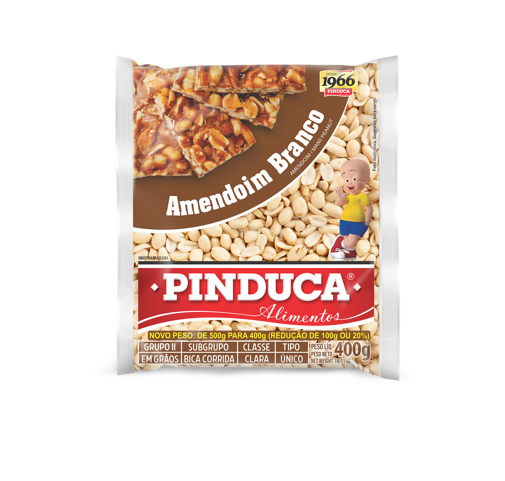

PRODUTOS
A qualidade e tradição da PINDUCA podem ser facilmente comprovadas pela demanda, que tornou seus produtos campeões de venda. Desde a década de 90, a PINDUCA vem diversificando sua linha industrial com um processo de fabricação qualitativo sempre constante, o que mantém um mesmo padrão de produto final. Confira algumas de nossas novidades:
Massa p/ Tapioca Sabor Coco Pinduca 500g
Crepioca Tradicional Pinduca 250g

Amendoim Branco Pinduca 500g
Farinha de Mandioca Amarela Pinduca 1Kg